How it works
There are two kinds of accounts. The game master runs the server and signs in as gamemaster. Players join through an invite link, and their account only opens the game they were invited to.
A game holds its maps, its runners, the runs (contracts) and the handouts the GM gives out, and a record of each session. Everything updates live: when the GM opens a door, resolves an attack or shares a handout, players see it at once without reloading.
The rules follow the Shadowrun Sixth World core rulebook: metatype limits and abilities, skills with specializations and expertise, every weapon, armor, implant, vehicle, spell, power, spirit and complex form from the book, dice pools with the Wild Die and Edge, actions per round and defensive interrupts, Attack Rating against Defense Rating, cover and line of sight, ammo, drain, fading and sustained spells, the Matrix with its Overwatch Score and IC, rigging, toxins and drugs, healing, and NPCs by Professional Rating. The app does the arithmetic; the table keeps the judgment calls.
It also includes the Sixth World Companion content that works with the core rules: metavariants, metasapients and the Infected as playable characters, the new qualities with their effects worked out on the sheet, contact archetypes, and every gear PACK in the store. The Companion's optional rules (alternate creation systems, changed initiative and so on) are not used.
For players
The top bar has everything you need during a session. Use the tabs to switch between Map, Character, Store, Runs, Handouts and Wiki. On the right you always see your health, Edge, Karma and nuyen.
The connection check
Before the sign-in page opens, your browser connects to the Matrix: it solves a hard puzzle that keeps bots from hammering the server with password guesses. The squares are the puzzle's 64 sectors, lighting up as your device cracks them, with its speed and the time left below.
- It takes about 15 to 30 seconds on a laptop, up to a minute or so on a phone. Keep the tab open; it uses every core your device has.
- It runs once per sign-in. While you're signed in you never see it, and a sign-in lasts 12 hours after you last used the app (24 at most), so a long session won't log you out.
- After 5 wrong passwords, or 30 minutes without signing in, the check runs again.

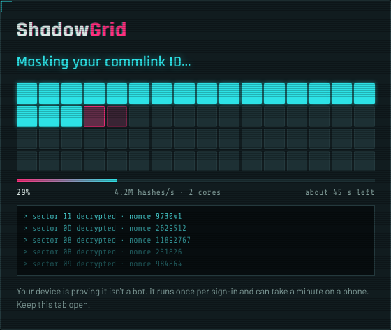
Join a game
- Open the invite link your GM sent you. Each link works once and expires after a week.
- Pick a username and a password of at least 8 characters, then click Create account & join.
- You land on your character sheet. Next time, sign in on the main page with the same username and password (after the connection check).
You can change your password any time from the menu with your name in the top right corner.

Build your runner
A new character starts as a draft. While it's a draft you edit freely, everything you buy is refunded in full if you return it, and the store sells anything up to Availability 6. When you're done, click Submit for approval. Your GM approves the sheet or sends it back with a note.

- Metatype sets your attribute maximums and gives its abilities for free: elves and orks see in low light, dwarfs and trolls see heat, dwarfs resist toxins, orks and trolls are Built Tough, trolls have dermal deposits. The list also has every metavariant and metasapient, grouped under its base metatype (see below).
- Magic / Resonance: Mundane, Magician, Aspected Magician, Adept, Mystic Adept or Technomancer. Magicians pick a tradition (Hermetic drains with Logic, Shamanic with Charisma) and may follow a mentor spirit.
- Role is just a label, such as Street Samurai or Decker. It gives no bonuses in Sixth World.


Qualities that change numbers are applied for you, Companion ones included: Augmentation Acclimation and Cyborg (more Essence room), Cyber Psychosis, Cyberjack Maximization, Favored Weapon, Injury Prone, Polyglot, Twitchy, All Business and Trust Issues (Loyalty capped at 3), and the metagenic qualities: Bark, Granite and Rhino (armor), Shiva Arms (extra arms and Minor actions), Celerity and Satyr Legs (movement), Neoteny, and claws, horns, fangs, quills and tails as natural weapons. Racial-only traits can't be picked by other metatypes.
Derived values are calculated for you: Composure, Judge Intentions, Memory, Lift/Carry, movement, Initiative (plus Matrix and astral initiative), condition monitors, wound modifiers and Defense Rating.
After approval you improve with Karma: an attribute or skill costs the new rating × 5, a specialization or expertise 5, a knowledge skill 3, a spell or complex form 5, and a positive quality twice its cost. Purchases are final. Negative qualities can still be taken (a new Addiction, a SINner record…), but they give no Karma after approval, and the GM sees them in the table log. Metatype, magic type, tradition and aspect can only be changed by the GM.
Metavariants, metasapients and the Infected
The Metatype menu on the Overview lists each base metatype with its variants, then the metasapients. A variant or metasapient costs Karma at character creation, the amount shown in the menu, and you confirm before it's taken. It brings its own attribute maximums and racial qualities.
- Metavariants (20): dwarf (Duende, Gnome, Hanuman, Koborokuru, Menehune), elf (Dalakitnon, Dryad, Nocturna, Wakyambi, Xapiri Thëpë), human (Nartaki, Valkyrie), ork (Hobgoblin, Ogre, Oni, Satyr) and troll (Cyclops, Fomorian, Giant, Minotaur). A Minotaur's horns become a natural weapon in the dice roller and in attacks, and a Nartaki's extra arms add Minor actions.
- Metasapients: Centaur, Merrow, Naga, Pixie and Sasquatch, with their movement, size, natural weapons and armor.

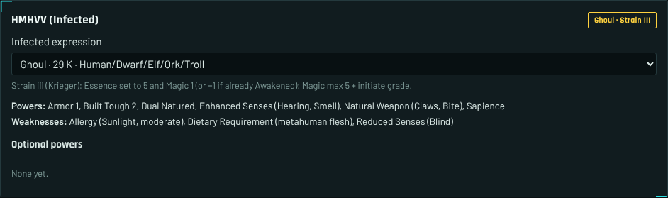

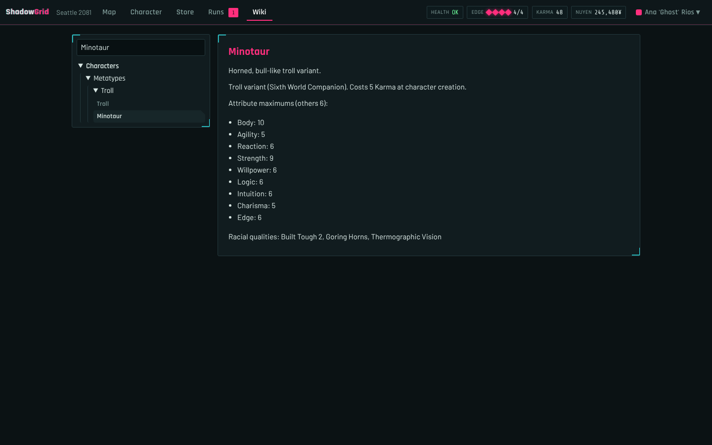
Infected (HMHVV): the HMHVV card on the Overview turns a character into one of 18 Infected (ghoul, vampire, banshee, wendigo and the rest), if their base metatype allows it. The Karma cost is charged, attribute maximums change, and the character becomes Awakened and dual-natured. Technomancers can't be Infected.
- Strain II and III set Essence to 5 and Magic maximum to 5 + initiate grade. Strain I Essence goes up and down with feeding, so the GM sets it with Set….
- Powers and weaknesses are listed on the card. Optional powers are bought with Karma; one is free at creation when the expression allows it.
- The Infected pay 30% more for their lifestyle. The two free physical and two free mental attribute points are added by hand (or by the GM).
Changelings use the metagenic qualities in the Qualities section (positive and negative), since SURGE only changes your qualities.
Skills and knowledge
Each skill shows its rank, a specialization (+2 dice when it applies) and an expertise (+3). Expertise grows out of a specialization once the skill is at rank 5: Make expertise turns your specialization into expertise and frees the slot for a new specialization. The pool on the right is what you roll. Some skills, like Astral or Cracking, can't be used untrained.

Below the skills, add knowledge skills (no ranks: they let you use Perception or Memory on the subject) and languages at Basic, Specialist (+2), Expert (+3) or Native. One native language is free at creation.

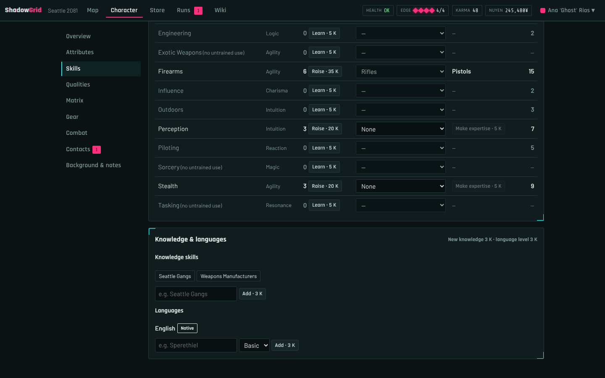
Giving nuyen and gear
Once your sheet is approved, Give nuyen… at the top of the Gear section and Give… on an item hand them to another runner of the game (whose sheet is approved too). For ammo, grenades and other stacks you choose how many. Implants stay in your body, a focus's bond breaks, and weapons on a vehicle's mounts stay with you. Both ledgers record it and the table log says who gave what.
Contacts
Contacts are how you get gear. Each contact has a Connection and a Loyalty (1-12) and a list of what they can source: weapons, armor, cyberware, magic, vehicles, and so on. A contact can get an item whose Availability is lower than their Connection.
The contact's type already sets what they source: a fixer finds anything, an arms dealer weapons, ammo and armor, a street doc medical gear, cyberware and bioware, a talismonger magic, a decker Matrix gear, electronics and IDs, a mechanic vehicles, drones and tools, and so on. Tick extra boxes for anything else they can get you. The Companion's contact archetypes (Arms Dealer, Bartender, Deckmeister, Fence, Mr. Johnson, Street Doc, Talismonger and the rest) are in the type list too, with what each one sources. All Business and Trust Issues cap a runner's Loyalty at 3.
Contacts tagged Shared come from the GM: every runner in the game has them, they cost no Karma, they're confirmed already and they source gear like your own. Only the GM can change or remove them.

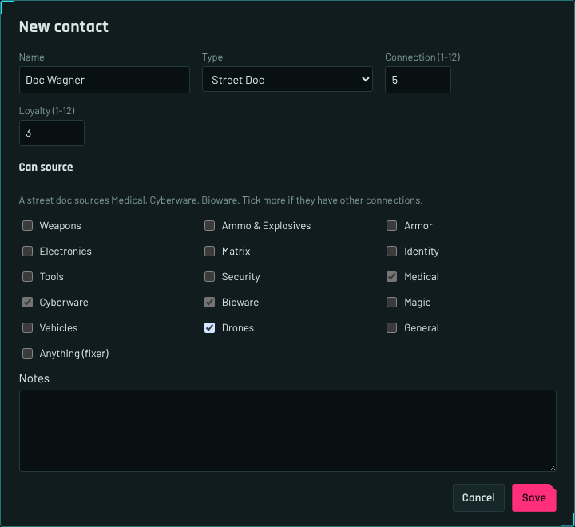

Store, gear and ammo
The Store tab has every item from the core book, by category: weapons, ammunition and explosives, accessories, armor, electronics, cyberdecks and software, IDs, tools, security gear, medical supplies, cyberware, bioware, magic items, vehicles and drones. Each card shows the game stats, the Availability (L means a license is needed, I means illegal) and the price. Rated items have a rating box, implants a grade (used, alphaware, betaware, deltaware), and ammo is sold in boxes of 10.

After approval, legal items up to Availability 2 are always on sale; everything else needs a contact. Untick the filter to see what a new contact would unlock: locked cards say exactly what kind of contact you'd need.

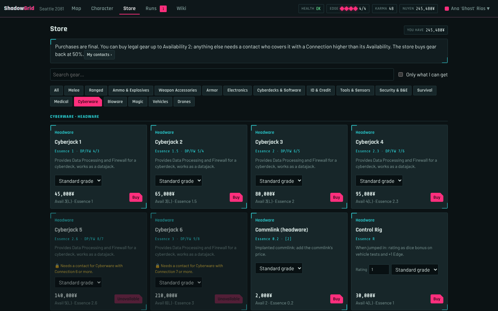
When the sellers run dry, the GM marks items out of stock: they stay in the store, greyed out, until they're back. A PACK with an out-of-stock item inside is out of stock too.

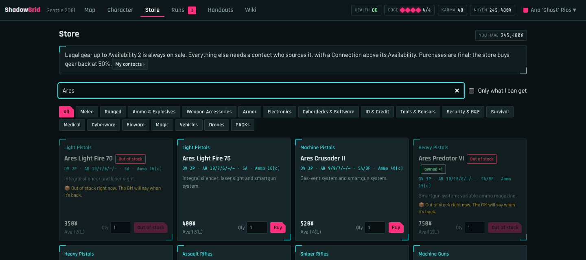
Your items appear in the Gear section of your sheet, grouped by category:
- Equip weapons and armor. Your best body armor plus helmets, shields and implants add to your Defense Rating.
- Reload guns from your ammo stacks, here or with the Reload button in the dice roller. Ammo fits by caliber: heavy pistol and SMG rounds, light pistol rounds, rifle rounds and so on, as named in the store. The rounds loaded and the ammo type (APDS, explosive, gel and so on) are shown and change the weapon's Attack Rating and damage.
- Rolling an attack spends the ammo by firing mode, and throwing a grenade or throwing knife uses it up.
- Vehicles and drones have their stats and a damage monitor. Foci are bonded from here or from the Magic section.
- Sell gives you the game's buy-back percentage, again through a contact who could handle the item (implants included). During creation, Return refunds the full price instead.

PACKs
The PACKs category has every gear PACK from the Sixth World Companion: character PACKs (Shadowrunner Starter, Dirt Poor, Street Samurai and so on), weapon PACKs, armor, Matrix, magic, vehicle and drone PACKs, and augmentation PACKs. Open Contents to see what's inside, then Buy PACK adds every item for the PACK's price.

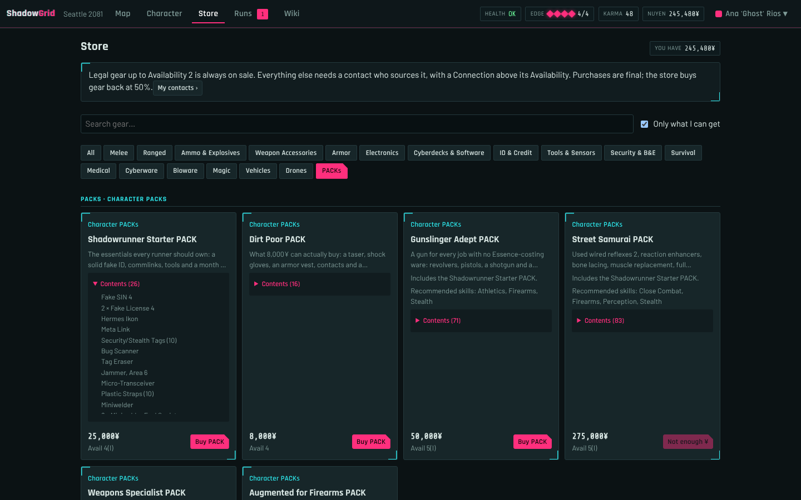
- Each item in a PACK has to be reachable on its own: after approval, a PACK with a cyberdeck still needs a contact who sources cyberdecks.
- Augmentation PACKs can be bought in the grades the book lists, at the grade's price and Essence.
- Ammo goes with the weapon it was bought for, and items in the gear list say which PACK they came from. Their sell value is the PACK's price split over the items.
- A few book items that aren't in the core store (drugs, some vehicle mods, the disguise kit) are added as custom items.
Magic and resonance
Awakened characters get a Magic section: Magic and its maximum, spell Attack Rating, drain pool and astral initiative; spells and rituals from the book (with drain values); adept powers with levels and a Power Point counter; foci to bond; spirits; and initiation with metamagics.

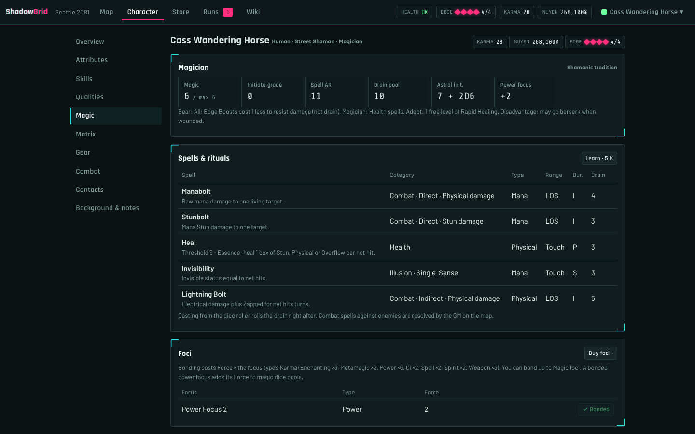

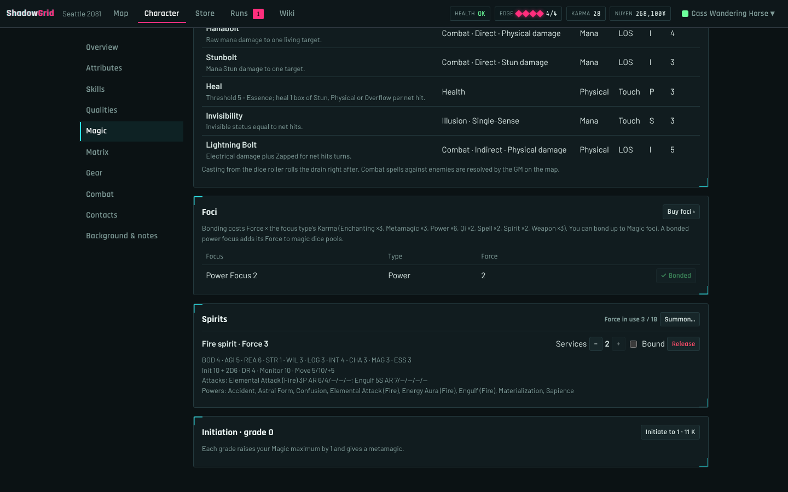
- Casting from the dice roller rolls drain right after, and applies it: Stun, or Physical when the Drain Value is higher than your Magic. Amp Up and bigger areas add to the drain.
- Sustained spells (duration S) are kept up automatically after you cast them, and listed under Sustained spells. Each one gives −2 dice on your other tests until you click Drop.
- Summon rolls Conjuring + Magic against the spirit; net hits are services and the spirit's hits are your drain.
- Initiate costs 10 + the new grade in Karma, raises your Magic maximum and adds a metamagic.
- Implants cost Essence, and every point of Essence lost lowers Magic by 1.
Technomancers get a Resonance section instead: living persona, complex forms (threading rolls fading afterwards), sprites to compile and register, and submersion with echoes.
Matrix
The Matrix section picks your active device: a cyberdeck, a commlink or, for technomancers, the living persona. It shows Attack, Sleaze, Data Processing and Firewall, Matrix Attack and Defense Ratings, Matrix initiative for AR, cold-sim or hot-sim, the device's Matrix condition monitor and your running programs. A cyberdeck takes Data Processing and Firewall from your cyberjack.

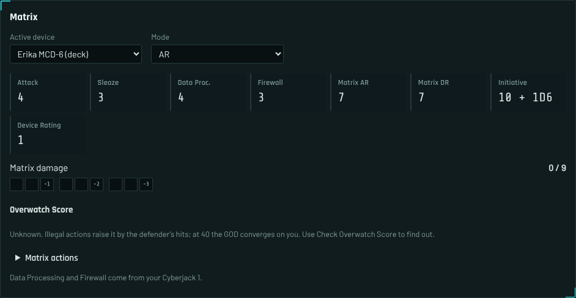
- Matrix actions are in the dice roller's Matrix group: Brute Force, Data Spike, Probe, Matrix Perception and the rest, each with the right skill and attribute. Illegal actions are marked; put the target's rating in Target rating and the defender's hits raise your Overwatch Score.
- The Overwatch Score is kept by the GM, and you don't see it. Check Overwatch Score tells you its value at that moment. At 40 the GOD converges: your device is bricked, you're dumped (dumpshock if you were in VR) and your location is reported.
- Damage on your device costs dice on Matrix actions (−1 per 3 boxes). Matrix damage isn't soaked unless you run Biofeedback Filter. A technomancer's persona takes Matrix damage on the Stun track.
- Programs do what their description says, as long as they run: Toolbox +1 Data Processing, Armor +2 Matrix Defense Rating, Overclock +2 dice with one of them the Wild Die, Encryption and Decryption +2 dice on their actions, Signal Scrubber −2 noise, Virtual Machine 2 more program slots (and 1 extra box when you're hit), Baby Monitor shows your Overwatch Score. Browse, Edit, Stealth and Trace give 1 Edge on Matrix Search, Edit File, Hide and Trace Icon: the roll card shows it, and it pays for a boost on that roll only. IC that lowers your attributes (Acid, Binder, Jammer, Marker) shows on your sheet, with a Leave host button that clears it.
- Reconfigure swaps two of your persona's ratings (a Minor Action); with Configurator running you can save a setup and switch to it at once. Noise (distance, walls, jamming) costs −1 per point on Matrix tests: set it on the sheet when the GM tells you.

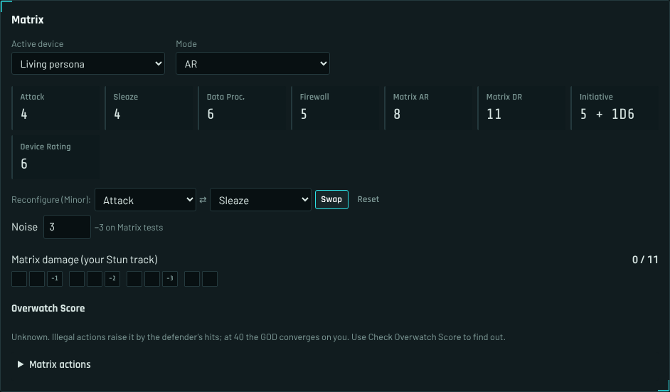

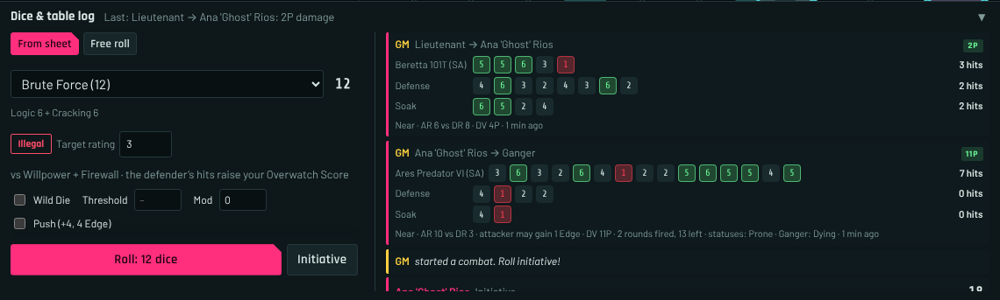
Vehicles and drones
Vehicles and drones you buy appear in Gear with their stats and a damage monitor. The dice roller's Vehicles group has a pool for each of them in every way you can control it:
- At the controls: Piloting + Reaction.
- Jumped in (needs a control rig): Piloting + Intuition, plus the control rig's rating.
Drones acting on their own roll an autosoft with their Sensor (Clearsight, Electronic Warfare, Targeting) or Pilot (Maneuvering, Evasion, Stealth). Pick what each autosoft program does in the Matrix section. The GM can put your vehicle on the map as a marker; damage it takes there shows on your sheet.
The Vehicles and drones card at the top of Gear tracks each one's speed: + and − change it by its Acceleration (once per combat round), and every Speed Interval you pass costs a die on Handling tests and on attacks from the vehicle. Vehicles take a weapon mount per 3 points of Body: buy a Standard or Heavy Weapon Mount in the store, install it from this card and put a gun in it. You fire it with Engineering + Logic (Vehicles group in the roller); when the drone fires on its own, the GM rolls its Targeting autosoft + Sensor.

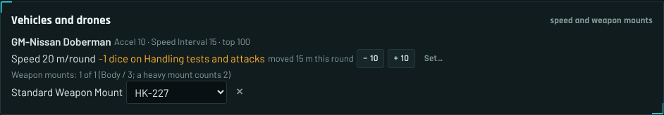
On the map
Once the GM places your token, the Map tab shows only what your runner has seen. The fog lifts as you explore, and closed doors block your sight. Icons above tokens and enemies show their statuses, such as Prone or Burning.
The map takes most of the screen. Around it:
- Side panel (left): your condition monitors, Edge and what's around you (doors, people nearby, travel). Hide it with ‹ or [.
- Initiative strip (top): appears when the GM shares the order. Whoever is acting glows, your own chip is outlined, and a short note tells you when it's your turn. The marks on your chip are the actions you have left this round: a diamond for the Major, dots for the Minors.
- Dice panel (bottom): the roller on the left, the table log on the right. Collapse it with ▾ or ]; the header still shows the last roll.
- View (top right of the map): isometric view, first person, line of sight and legend.


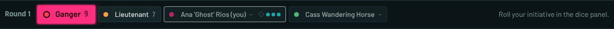

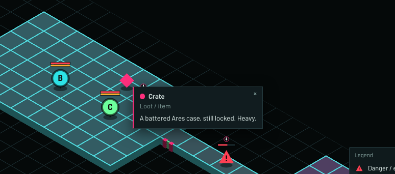
- Move: drag your token, click any room you can reach (a dotted line shows the path), or use the arrow keys.
- Doors: the buttons in the sidebar open the doors next to you, or click a door on your own cell. Locked doors need the GM.
- Travel: standing on a stairway or portal shows a Travel button to the next map.
- Ping: double-click a cell to flash it for the whole table.
- Details: hover over a marker or a runner for its name, or right-click it for a card with what you can tell: what it is, how hurt it looks, its statuses, where a portal leads, and anything the GM wrote about it. Esc closes it.
- View: Isometric view switches between the tilted view and a flat one. On some maps the GM decides the view; the View menu then says so.
Light, range and movement
The Tactics section of the side panel gathers what you need in a fight:
- Your eyes: normal vision plus whatever your metatype, qualities, cybereyes or gear add. Low-light vision sees clearly in dim light; thermographic vision sees heat in the dark and through normal smoke; ultrasound works in the dark and through any smoke out to 50 m. Glasses, goggles, contacts or a monocle carry their vision enhancements.
- Light: dark cells hide what's in them unless your eyes see in the dark, and enemies show on your map only while your runner can see them (loot, portals and the like stay where you found them). Smoke blinds: −3 looking through it, −6 from inside it. With a flashlight in your inventory, Switch the flashlight on lights 10 m around you, for everyone.
- Stealth: tick it to sneak. Your Stealth + Agility test is rolled at once and its hits are the threshold: each enemy that can see you rolls Perception + Intuition against it as you come into its view, and whoever reaches it notices you. Darkness hides you from normal eyes and smoke blinds them. While you sneak, your token turns ghostly and enemies in view with eyes on you carry 👀. Sneaking doesn't slow you down. Untick it to stop; attacking or being attacked ends it, and so can the GM. Whether you see the dice is the GM's call.
- Range bands (R): pick a weapon and the cells you can see take the colour of its range bands; the key under the map gives its Attack Rating in each. The map's scale is 2 m per cell unless the GM sets another.
- Movement (M): in combat, the dashed white line marks how far your Move takes you, amber cells a sure Sprint, and hatched ones how far a Sprint could go with every hit. Your moves count on your own turn: the first one spends your Move (a Minor Action); going farther becomes a Sprint (a Major Action, Athletics + Agility rolled for you); a Sprint can't follow a Move; and a move past your reach stops where your meters run out. Prone, Hobbled, Fatigued and the like shorten it. Before you roll initiative, and outside combat, you move freely.
- Areas: pick a grenade or explosive you carry, an area spell you know (with Increase Area), or a radius, press Place an area and click the centre cell. Walls stop it; a blast shows its Ground Zero, Close and Near rings, and the list underneath says who's inside and the DV they take. You can keep three on the map; × removes one.

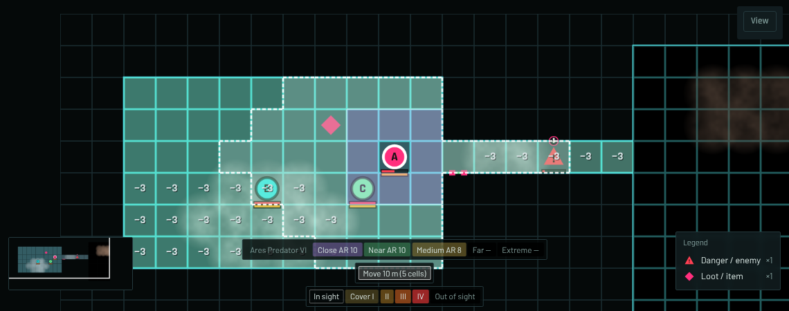

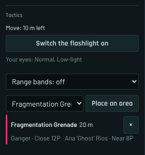
First person
First person in the View menu (or V) puts the camera on your token, at eye level, and shows the light as your eyes see it: dim corridors darken unless you have low-light vision, the dark turns to a heat image through thermographic eyes, and smoke hangs in the air. The arrow keys or W A S D walk forward and back and turn; Q and E sidestep on square maps. Enter opens or closes the door in front of you. On a phone, tap the left or right third of the map to turn and the middle to step. Every step is a normal move, so the fog lifts and the table sees you walk. Walls stand only where there are walls; past what you've explored hangs a bank of fog. The floor carries the same overlays as the flat map: line of sight (L) darkens what you can't see and tints cover, range bands (R) colour the floor by band, Movement (M) shows your reach, and areas show their rings. Click a marker or a runner for its details. The minimap still shows the whole map.

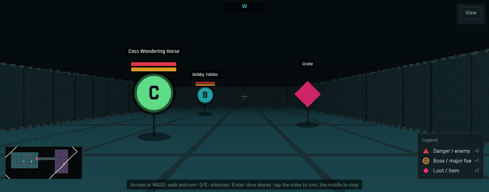
Line of sight
Line of sight (or L) shades the map from your token: cells in plain sight stay clear, cells you can see only partly carry the cover a target there would have (Cover I to IV, worked out the same way as in combat), and cells out of sight darken. Drag your token and the shading follows it, so you can check a spot before you move.

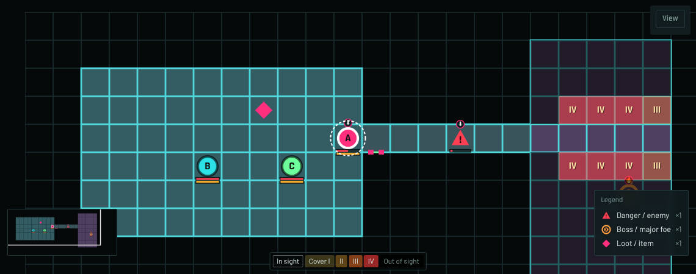
Dice, combat and healing
The roller is in the dice panel under the map and in the Combat section of your sheet. Pick a pool from your sheet: a skill (with specialization or expertise), a weapon, a spell, Defense, Damage resistance and more. Your wound modifier is applied automatically. Natural weapons (claws, horns, bite) from your metatype or Infected powers are in the list too.

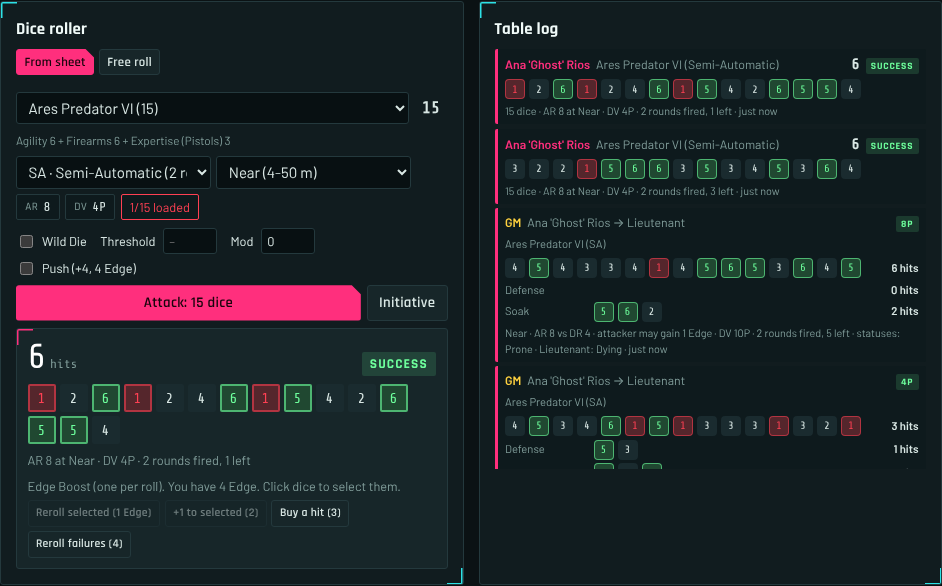
- Firing modes: single shot uses 1 round; semi-auto 2 (−2 AR, +1 DV); burst 4 (−4 AR, +2 DV); full auto 10 (−6 AR).
- Wild Die: on a 5 or 6 it counts as 3 hits; on a 1 your 5s don't count.
- Threshold: the hits you need. The result says SUCCESS or FAILURE and shows net hits.
- Push: spend 4 Edge before rolling to add your Edge rating, with 6s exploding. After rolling you can spend Edge on one boost: click dice to select them, then choose.
- Defending: when you're attacked, the GM can let you Dodge, Block, Hit the Dirt or take Full Defense. It uses up your actions for the round, so keep that in mind on your turn.
- Initiative lets you pick physical, Matrix or astral initiative, and shows your actions: 1 Major and 1 Minor, plus 1 Minor per Initiative Die (5 Minor at most). If the GM is running combat, your score goes straight into the order.

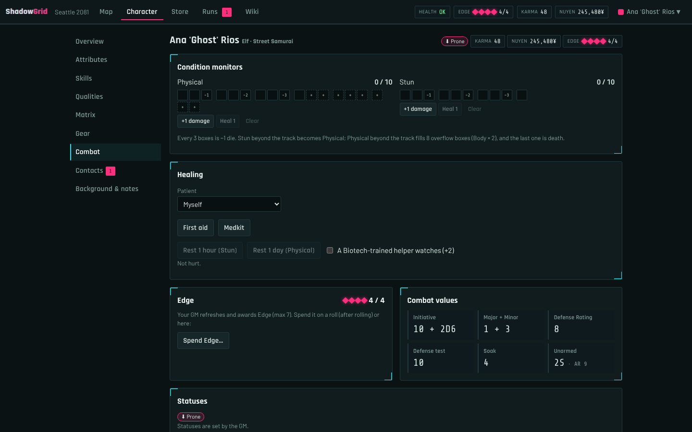
Healing follows the book, and every method is in the dice roller's Healing group: pick it, choose the patient (yourself or an ally) and roll; the healing is applied right away. First aid and medkits roll Biotech + Logic against 5 − the patient's Essence; a Heal spell rolls Sorcery + Magic. First aid without a medkit is −2 dice and can't use Edge; a medkit adds +1 (wireless) and uses one set of Medkit Supplies, which you need to have. Each works once per set of injuries and never heals drain. Rest rolls Body + Willpower per hour for Stun and Body + Body per day for Physical, with +2 when someone trained in Biotech looks after you.
Drugs and toxins: the store sells the core book's drugs and toxins by the dose (Medical). Drugs you carry can be taken from the Drugs and toxins card. You resist with Body + Willpower (untick Resist to take the full effect); each hit lowers the Power by 1. What's left applies: damage, statuses and the drug's bonuses while it lasts, then its crash. Statuses a toxin causes end when it wears off. Some substances call for an addiction test. The GM exposes you to toxins the same way.

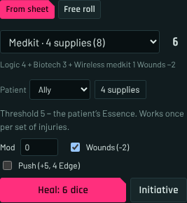
Runs and lifestyle
The Runs tab lists the contracts the GM gave you, with their tasks and progress. Tasks marked * are mandatory. When the GM closes the run, your reward is added to your nuyen.

Your lifestyle is charged by the GM at the start of each month (Street is free, Squatter 500¥, Low 2,000¥, Middle 5,000¥, High 10,000¥, Luxury 100,000¥). If you can't pay, your nuyen goes negative: you're in debt.
The Wiki tab has rules summaries, statuses, actions, and every item, PACK, spell, power, spirit, complex form, quality, metatype, metavariant, Infected expression and NPC in the game, with a search box.

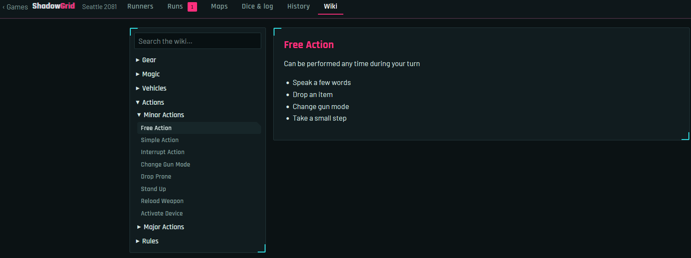
Handouts and session recaps
The Handouts tab has the notes, dossiers and pictures your GM shared with you, newest first. Each one is folded: click its title to read it. Unread ones carry a NEW tag and the tab's badge counts them; a short message tells you when one arrives. The search box finds words in titles and text, and the cards you leave open stay open.

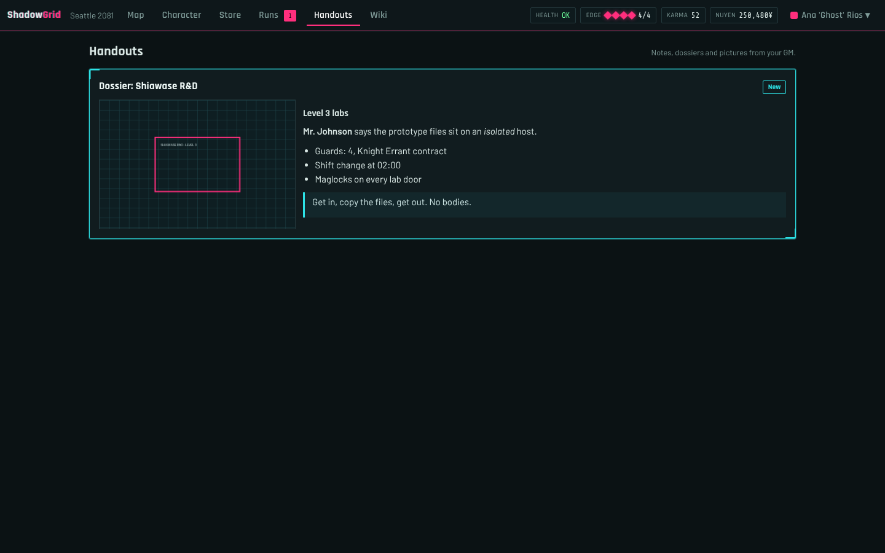
When the GM shares a session recap, it appears at the end of the Runs tab: what happened, the fights, the awards and the GM's notes.
Music
When the GM plays music, a small player appears in the top bar with the track's name. Everyone in the game hears the same moment of the same track; if you join late, you drop in mid-song. It keeps playing while you move around ShadowGrid; only the note icon mutes it.

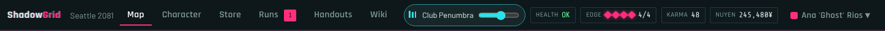
- The slider sets the volume on this device only; the note icon mutes it here (crossed out when muted). Both are remembered.
- With ShadowGrid open in several tabs, only one plays. Play here moves it to the tab you're looking at.
Print your sheet and character files
The Sheet… menu at the top of your character sheet has:
- Print or save as PDF: a two-page printable sheet. Choose Save as PDF in the print dialog for a file.
- Blank sheet to print: the same layout, empty, to fill in by hand.
- Export character file: saves your runner to a file.
- Import character file…: loads a runner from a file. It only works while your sheet is a draft, and the GM sees that the sheet was imported.


For the game master
Install
ShadowGrid runs on Linux. In its folder, run ./install.sh. It sets up Python and the dependencies (ffmpeg for music included), asks for the gamemaster password and asks whether to install and configure nginx for internet play (with HTTPS, a firewall rule and a service that starts on boot). Run it again any time to update.
./local.shstarts a game for your home network. It prints the address for your players' computers and phones../serve.shstarts a game for players on the internet, behind the nginx set up by the installer. If you installed the service, it's already running: usesudo systemctl restart shadowgridinstead..venv/bin/python app.py set-passwordchanges the gamemaster password.
The README has the details: settings, the nginx hardening and how to move a game to another machine.
Start a game
- Start ShadowGrid with
./local.shor./serve.sh. - Sign in with the username
gamemasterand the password you chose when installing. - Click New game and give it a name. Each game has its own maps, runners, runs, handouts and sessions.


Build maps
On a game, use New map to draw one from scratch or Generate map for a procedural one. The generator offers rooms and corridors, winding passages and caves, on square or hex grids, with a live preview. The same seed always produces the same map. Under Advanced, Max corridor length is a hard limit for rooms and corridors: rooms are placed close enough that no corridor between them is longer.


In Edit mode you have these tools:
- Paint, Rectangle and Erase draw rooms.
- Secret hides cells from the map station; players only find them by walking in.
- Door adds doors on cell edges.
- Marker places enemies, loot, NPCs, objectives and portals to other maps. Pick an NPC template and new markers get that NPC's stats, weapons and condition monitor. For a quick enemy, a Body and Willpower are enough for a monitor.
- Room names a group of cells.
A vehicle or drone marker (any vehicle template, or a runner's own) adds its speed to the Selected tab: + and − change it by its Acceleration, and the Speed Interval penalty and extra ram DV follow. An NPC vehicle also takes weapon mounts: Mount a weapon… picks a gun from the store and the rating of its Targeting autosoft. A runner's own vehicle keeps its speed and mounts on their sheet.

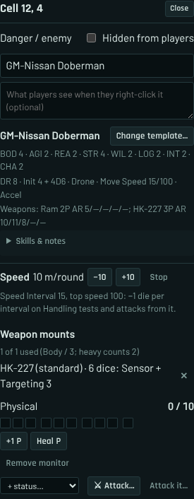
Colors & settings also sets how players see each map: Players see this map as they choose, top-down, isometric or in first person. When you pick one, their View menu greys out those choices on that map, and their own choice comes back on maps you leave open.
Under Colors & settings, The map's light sets the light everywhere you haven't painted, Meters per cell its scale (2 m by default; it sets range bands, movement and areas), and Enemies show to a runner only while that runner can see them hides danger, boss and NPC markers from players whose runner can't see them (on by default). Players see the legend on this map decides whether players get a legend there; it names the kinds of markers in view without counting them. Your own Legend switch under View only changes what you see.
Stealth. When a runner ticks Stealth, their Stealth + Agility test is rolled and every enemy or boss marker, or any marker with a stat block, that can see them rolls Perception + Intuition against the hits (once each, as the runner comes into view; moving, a flashlight, an opened door or your own changes to the map bring new ones in). The runner's entry under Runners shows their hits and who noticed them, and those enemies carry ❗ on your map. Check again has everyone in view take a fresh look; unticking the box ends their stealth, as does any attack they make or take. Start combat ticks the runners nobody noticed as ambushers. On the game page, Players see stealth rolls decides whether these rolls are yours alone (the default).

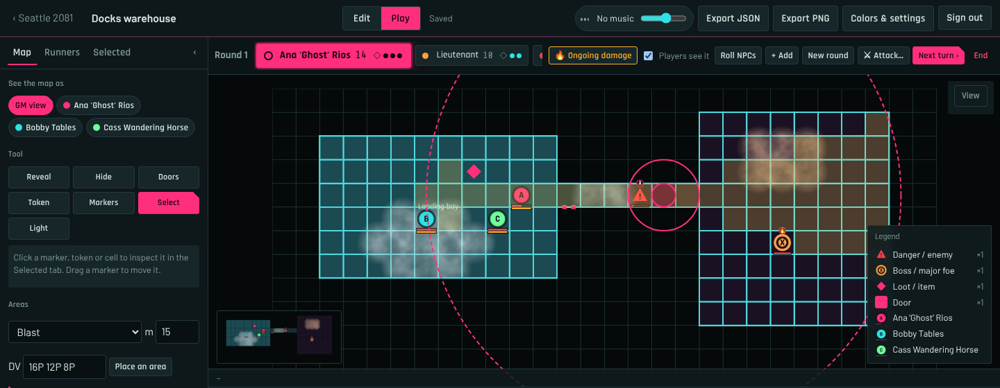
Colors & settings also has Reveal what runners can see as they move: with it on, a runner who moves or opens a door explores every room cell they can see, up to the distance you set (8 cells by default). Walls and closed doors block it, cells too dark for the runner's eyes stay hidden, and so do secret cells. Without it, runners explore only the cells around them.

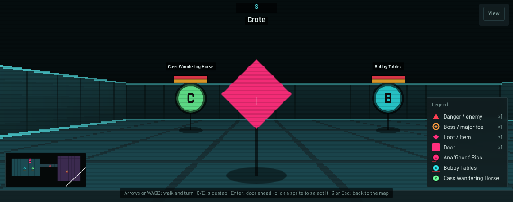

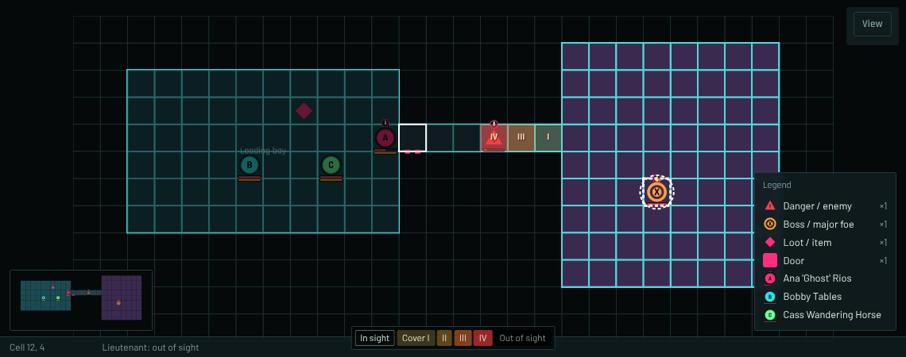
Delete a map from its card on the Maps tab or from Colors & settings in the editor.
Changes save automatically, and Ctrl+Z undoes them. Autosave never undoes what happened live meanwhile: doors players opened and damage or statuses from combat are kept.
Invite players
Invite player creates a single-use link that is valid for 7 days. Send one link to each player. Unused links are listed on the game page under Invite links, where you can copy or revoke them.
Approve character sheets
A submitted sheet shows a Waiting for approval tag on the home page, the game page and in the map editor. A runner with new or changed contacts shows how many are waiting for you to confirm.


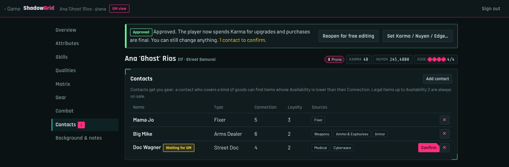
- Approve sheet locks the character into normal play, fills their Edge and confirms their contacts.
- Send back… returns it to draft with a note the player sees.
- As GM you can change anything on any sheet for free. Set Karma / Nuyen / Edge… sets exact values, including initiation and submersion grades.
- Give an item… (in Gear) adds anything from the store, at any rating, grade and quantity, a whole PACK (in any of its grades), or a custom item. No nuyen and no contact needed.
- On the Overview you can also make a runner Infected, add their optional powers and set a Strain I character's Essence. Reputation and Heat are set by you there; players only read them, and every change is logged.
- In the Matrix section you see and change a decker's Overwatch Score, and Converge applies convergence.

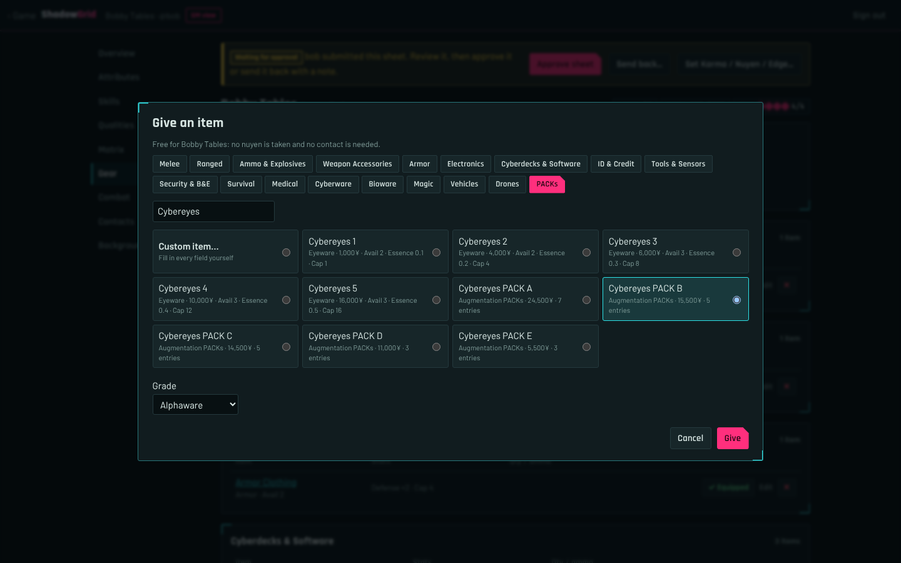

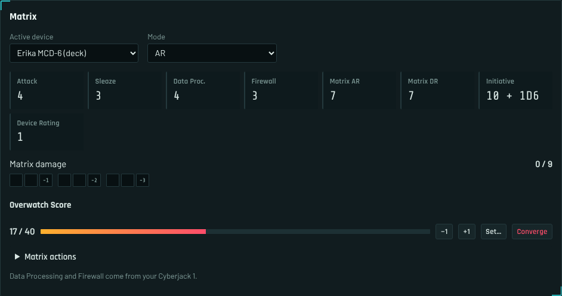
The map screen
The map editor is built around the map. Everything else sits at the edges and can be tucked away:
- Side panel (left). In Edit mode it holds the drawing tools. In Play mode it has three tabs: Map (viewing as, tools, fog, snapshots), Runners (each runner's condition, Edge, statuses and attack buttons) and Selected (the inspector of whatever you clicked; a dot marks it when something is selected). ‹ or [ hides it.
- Combat strip (top of the map): the initiative order and the combat buttons, always in view during a fight.
- Dice panel (bottom): your roller and the table log. ▾ or ] collapses it to one line with the last roll.
- View (top right of the map): isometric view, first person, line of sight, legend and room names.

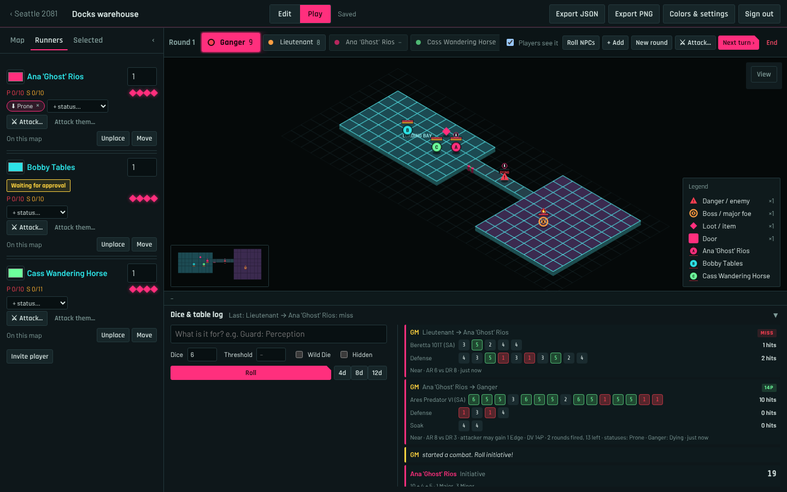
Run the session
Switch the map editor to Play mode during the game. It opens in the isometric view; toggle it with I.
- See the map as: GM view shows everything. Pick a runner at the top of the Map tab, or click See as next to them on the Runners tab, to see exactly what they see (click again for the GM view). Tab cycles through them.
- Reveal and Hide: paint a runner's fog with a brush, or reveal a whole room. The same buttons exist under Everyone for the whole party.
- Doors: click to open or close, and Shift+click to lock.
- Token: place or move the selected runner's token.
- Select (the tool Play mode starts with) and Markers: drag a marker to move it, in either view (grab the icon itself in the isometric view). Click one to open its inspector in the Selected tab: its NPC stat block, its condition monitor, its statuses, attack buttons, and a description players read when they right-click it.
- Statuses: under each runner in the Runners tab and in a marker's inspector, add Prone, Burning, Zapped, Cover and the rest. Their icons appear on the map for everyone. Only you can set and clear them.
- Snapshots: save and restore the whole game state (positions, exploration and doors).
- First person (3): walk the map at eye level, the way your players can. The camera starts on the runner you're seeing the map as (or the selected cell, or the first runner), walks through rooms without moving anyone and stops at closed doors (open them with Enter; a locked one needs unlocking first), and shows hidden markers faintly. Line of sight, movement and areas show on the floor. Click a marker or a runner to select it. Enter opens the door ahead; 3 or Esc goes back.
- Line of sight (L): shades what the selected marker or runner can see with their own eyes, with the cover on each cell; with nothing selected, it's the runner you're seeing the map as. Hover a cell and the status bar under the map says what they'd get there, for example Sniper: Cover II.
- Light (B, in Edit and Play mode): paint cells bright, dim or dark, or fill them with smoke or thermal smoke; players see the change at once. In a marker's inspector, Gives light makes it a lamp or a fire (that many meters around), and Eyes shows what it sees with: read from its stat block (metatype, cyberware, critter powers) or set by hand.
- Movement: select a runner or a marker in the fight and the map shows how far they can Move and Sprint this turn. Runners' own moves are checked on their turn; yours never are, so drag anyone anywhere.
- Areas: under Areas on the Map tab, place a blast (radius and DV at Ground Zero, Close and Near), an area spell, a smoke or gas cloud, or a plain radius, and click its centre. Runners' areas show here too. Each lists who's inside; Attack those inside… opens the attack with them as targets, and a smoke cloud can be filled with smoke or thermal smoke.

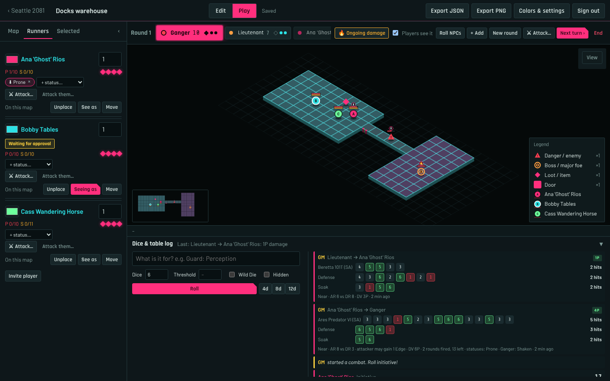

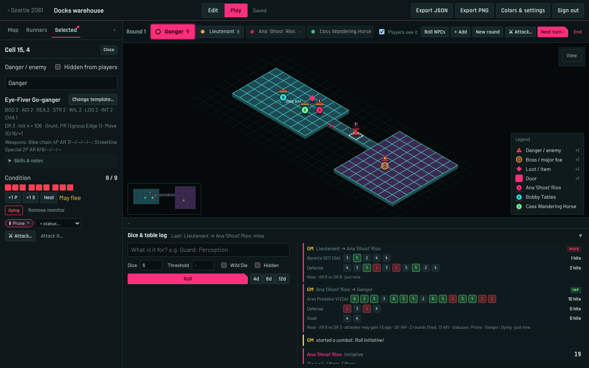
NPC templates cover every grunt in the core book from Professional Rating 0 to 10, the critters, spirits of any Force, IC by type and host rating, every vehicle and drone in the book, the runners' own vehicles and drones (their damage stays in sync with the sheet), the Companion's contact archetypes (for when a contact has to fight or be rolled for) and the Infected. Apply NPC template… in the inspector turns any marker into one.
Combat
The combat strip above the map runs the initiative tracker. Start combat… picks the runners and enemies on this map and rolls the NPCs' initiative. Players' own initiative rolls land in the order automatically. Tick Surprise and pick the ambushers: everyone else tests Reaction + Intuition (3), and whoever fails is marked ! and can't act in the first round.

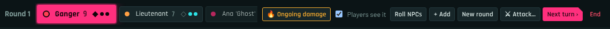
- Each chip shows the actions left this round: a diamond for the Major Action and dots for the Minor ones (1 + Initiative Dice, 5 at most). Attacks and defenses spend them for you; a new round gives them back. Initiative isn't rerolled between rounds.
- Click a chip for its menu: set the initiative score, spend a Major or Minor Action by hand (Use Major, Use Minor, Reset), make it their turn, show them on the map, roll initiative, attack with them or attack them, ✦ Counterspell… for a magician (a Major action: Sorcery + Magic, the hits protect the allies you pick against spells for Magic rounds, marked ✦ on their chips), hide or reveal an enemy, or remove them from combat.
- At the start of each round, everyone Nauseated tests Body + Willpower (2). When the fight ends, Edge above each runner's rating is lost.
- 🎯 Take Aim spends a Minor Action for +1 die on their next ranged attack (once per round, up to their Willpower; marked 🎯 on the chip). The bonus waits across rounds and is lost on a turn where they neither aim nor attack.
- ✦ Dispel a spell… targets a sustained spell: pick one of the runners' (with its hits and Drain Value) or describe an enemy's. Sorcery + Magic against the Drain Value × 2; each net hit cancels one of the spell's hits.
- Someone in a grapple shows ✊ (holding) or 🤼 (held). Their menu has the follow-ups: Restrain, Squeeze and Tackle for the grappler, Break free for the one held.
- Players see it shares the order on their map. Hidden enemies stay off their strip until you reveal them.
- 🔥 Ongoing damage appears when someone is Burning, Corrosive or Poisoned: at the start of a round, everyone affected resists the damage at once.
- Next turn › moves on; Roll NPCs, + Add (including custom combatants), New round and End (with a confirmation) are next to it.

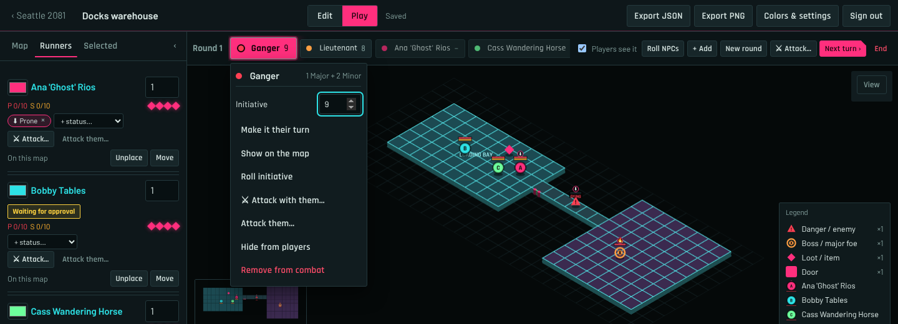

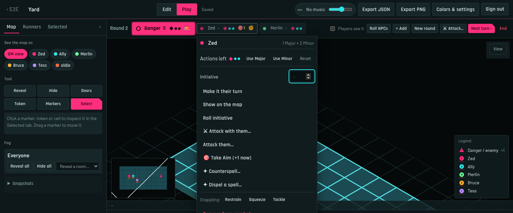

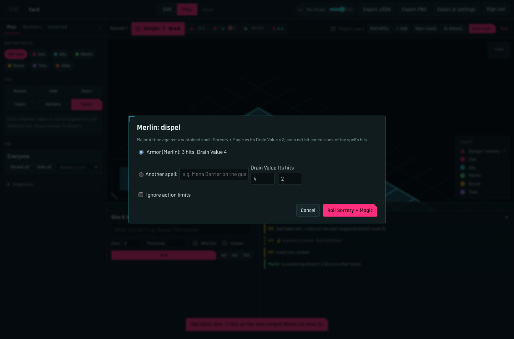
Attacks are resolved by you, with every roll made by the server. Open ⚔ Attack… from the strip (it starts with whoever is acting), a chip, a runner or a marker.

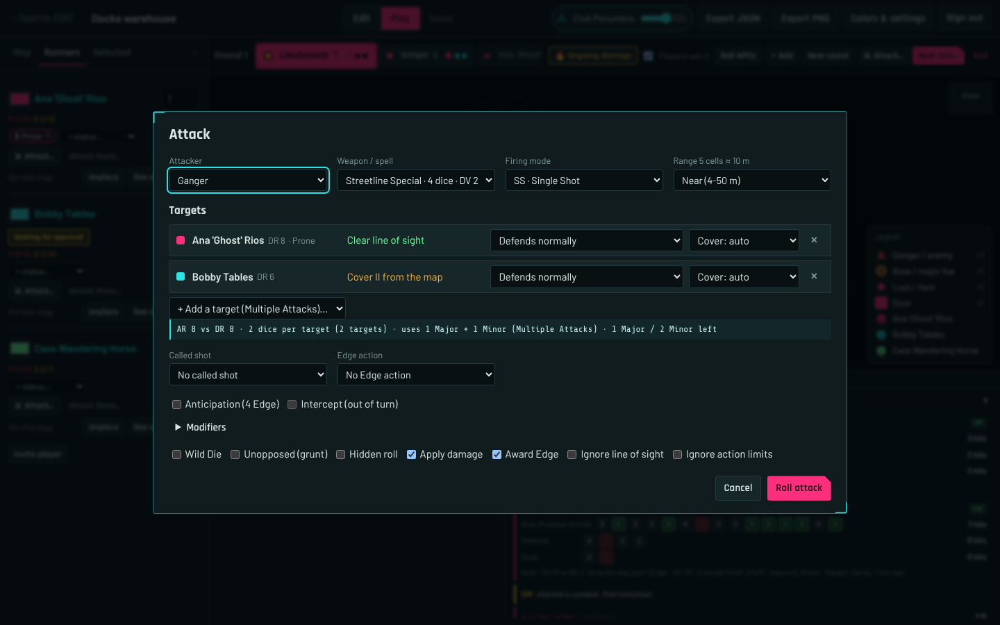

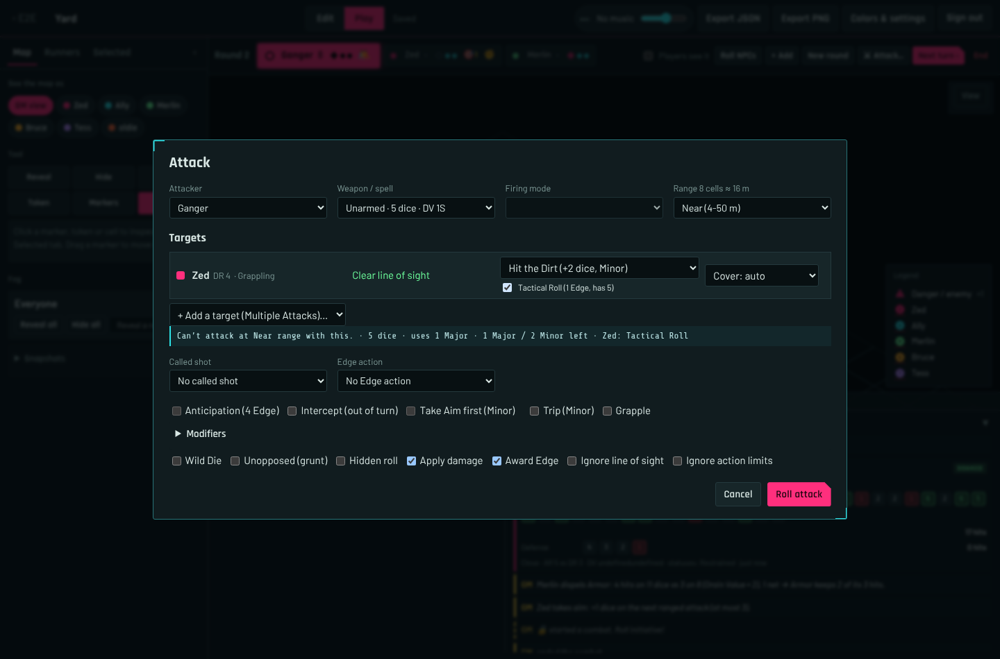
- Targets: add more with + Add a target. Several targets split the dice pool evenly and cost a Minor Action (not with full-auto fire); Anticipation (4 Edge, ranged only) rolls the full pool against each.
- Line of sight and cover are worked out from the map for each target: walls and closed doors between attacker and target give Cover I to IV, and with no line of sight at all the attack is refused. Change the cover per target, or tick Ignore line of sight for indirect fire.
- Defense: per target, pick an interrupt the defender takes: Block (+Close Combat, melee only), Dodge (+Athletics), Hit the Dirt (+2 dice, then Prone) or Full Defense (+Willpower for the rest of the round). They cost the defender's actions; the menu says when they can't afford one.
- Called shots: +2 DV for −4 dice (a Minor Action), or Shank (melee), Vitals and Disarm, which cost Edge. Edge actions: Knockout Blow, Tumble (melee) and Fire from Cover (ranged, from Cover IV). Intercept is a melee attack out of turn on someone moving past.
- Attacking from cover costs an extra Minor Action and earns the attacker no Edge; from Cover IV it's −2 dice unless they use Fire from Cover.
- Take Aim first adds the Minor Action and +1 die before a ranged attack; the aim built up from the strip is counted too. Trip (melee, a Minor Action) lowers the DV by 2, and on a hit the target tests Athletics + Agility against the DV or falls. Grapple (unarmed) holds the target instead of hurting them: Strength + net hits against their Strength.
- A Restrained target defends at −4 and gives every attacker 1 Edge; an attack that misses them goes at whoever holds them, with the same roll.
- Choosing Block offers Wrest (2 Edge: after a successful Block, Close Combat + Agility against the attacker's Strength to knock their weapon away or take it); Hit the Dirt offers Tactical Roll (1 Edge: no Prone penalties for them this round and the next).
- Vehicles: a drone fires its mounted weapons (Targeting autosoft + Sensor, Sensor − 1 without one) and a runner in the gunner's seat fires them with Engineering + Logic. Speed Interval penalties apply, and a ram gets +1 DV per interval.
- Counterspelling comes from the strip (see above): the dialog shows ✦ on protected targets, and their hits are added to the Defense test against a spell.
- Astral and Matrix attacks use the right pools: in astral combat, Astral + Willpower against a Defense Rating of Intuition (+ Force for spirits), with mana or physical damage; in the Matrix, Cracking with the deck's Attack, IC included. Each IC defends and hits as the core book says: Black IC and Sparky add biofeedback, Acid, Binder, Jammer and Marker lower the decker's attributes, Blaster and Tar Baby lock the link.
- Edge: Award Edge gives 1 Edge to whoever's Attack or Defense Rating is 4 or more ahead, at most 2 per round. Edge costs (called shots, Edge actions, Anticipation) are taken from the attacker, and each combatant spends Edge once per round: the dialog warns when they already have.
- The attacker rolls their weapon pool (runners use their sheet, NPCs their template), with statuses such as Blinded or Fatigued applied. The runner's ammo is spent.
- The target defends with Reaction + Intuition (Willpower + Intuition against direct spells, Reaction + Willpower against indirect ones), plus cover and the chosen interrupt. Prone is +2 against distant attacks and −2 up close. Ties go to the attacker.
- The Damage Value is the weapon's DV + net hits (+ firing mode, ammo and called shot); the target soaks with Body. Direct spells can't be soaked.
- The rest goes to the right monitor, Stun overflowing into Physical. A combat spell also rolls the caster's drain.

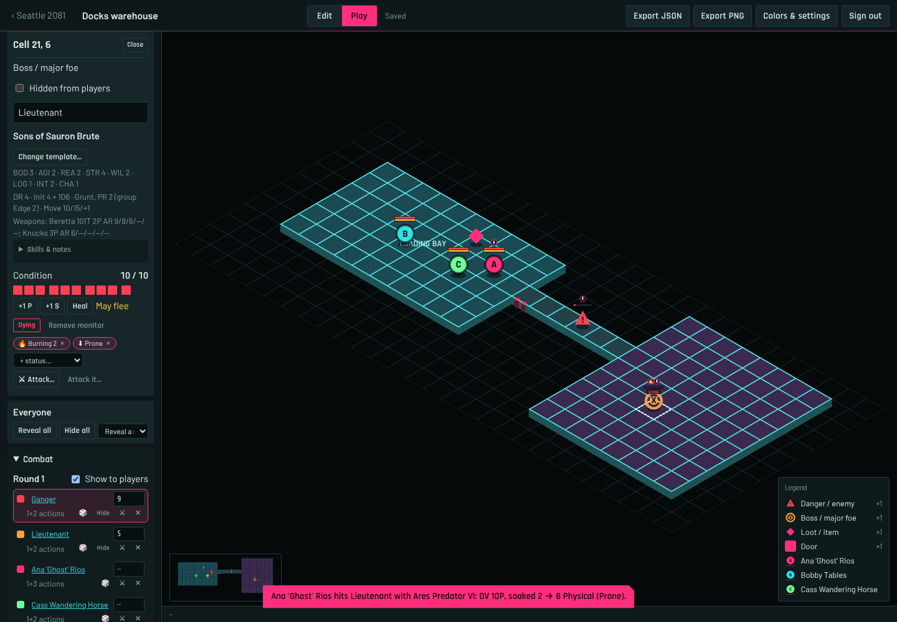
Under Modifiers you can add dice to any test, extra DV or Amp Up, override an NPC's pool, use the Wild Die, roll unopposed against weak grunts, keep the roll hidden, or roll without applying damage. Ignore action limits lets someone attack without actions left. The full breakdown goes to the table log.
Give out runs
On the Runs tab, New run asks for a name, a reward per runner, a description the players see, the tasks and the runners who take the job.

Tick tasks as they happen. The payout scales with the share of tasks done, and every mandatory task must be ticked before the run can be completed. Complete & pay… suggests the payout (you can change it) and pays it to each assigned runner.
Store stock
The Store tab lists everything the store sells, PACKs included. Untick an item when the sellers run out: players see it out of stock and can't buy it. Tick it again when it's back. Search, filter by category or by stock, and mark everything shown in or out of stock at once. You can still give out-of-stock items from a sheet.

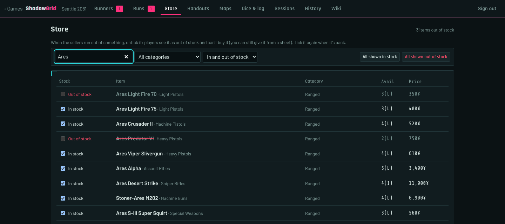
Handouts
The Handouts tab holds notes, dossiers, maps and pictures for the players. New handout asks for a title, the text in Markdown (headings, bold, lists, quotes and links, with a live preview), an image and who gets it: everyone or chosen runners. Untick Show it to them now to prepare a handout before the session and reveal it later.
Handouts fold like forum spoilers: click a title to open it. The search box finds words in titles and text and highlights them, opening the cards it finds them in; Expand all and Collapse all do what they say, and the cards you leave open stay open next time. Players get the same list, newest first, with a NEW tag on each handout until they open it.
Shared contacts. Shared contacts… on the Runners tab gives a contact to every runner at once, including runners who join later: a fixer the crew shares, or an NPC they all met. You set everything (type, Connection, Loyalty, what they source); it costs no Karma and is confirmed already. An NPC marker on the map offers the same with Give as a contact to every runner.

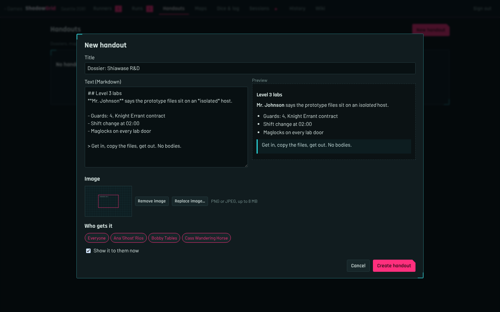
Music
The Music tab is your soundboard. Drop audio files on it (MP3, OGG, Opus, WAV, FLAC, M4A or WebM, up to 100 MB each): each one is compressed once on the server to Opus at 48 kbps, about 20 MB an hour, so streaming it to the table costs little. Volumes are evened out, so a quiet ambience and a loud combat track play at a similar level.

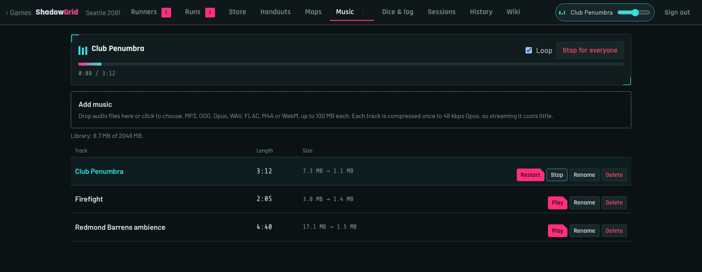
- Play starts the track for everyone in this game, from the same moment. Loop repeats it; untick it to let it end.
- Stop for everyone stops it. Deleting the track that's playing stops it too.
- On the map screen, the music control in the top bar has the same list: click the track name to play, loop or stop without leaving the map.
- You hear it too, on one tab at a time; the note icon mutes it on your device only.
Sessions
On the Sessions tab, Start session when the table sits down and end it afterwards. Everything in between (fights, attacks, notable rolls, Karma and nuyen, runs and handouts) becomes a recap with a timeline. Add your own notes in Markdown, tick Share with players to show it on their Runs tab, or Export (.md) it.

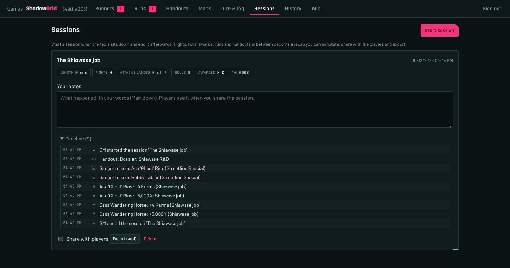
Toxins and drugs
Toxins & drugs… in the Between runs bar opens the game's library. Built in are the core rulebook's toxins (CS/Tear Gas, Gamma-Scopolamine, Narcoject, Nausea Gas, Neuro-Stun VIII to X, Pepper Punch, Seven-7) and drugs (Alcohol, Bliss, Cram, Deepweed, Jazz, Kamikaze, Long Haul, Nitro, Novacoke, Psyche, Zen), plus the Companion's Renfield and HMHVV strains. Their effects are applied, not just described:
- damage equal to the Power left after resisting, and statuses (Dazed, Nauseated, Blinded I, Immobilized…) that end when the effect wears off;
- attribute changes, Initiative Dice, Perception, High Pain Tolerance, dice on all tests or on Physical tests, Psyche's lighter penalty for sustained spells;
- crashes: unresisted damage, statuses, and penalties that last on their own (Nitro's −2 dice, Novacoke's Charisma and Willpower at 0).
Add your own substances with the same fields, or Copy a built-in one to change it for your table. Expose a runner from the Drugs and toxins card in the Combat section of their sheet; the effect stays listed there until you click Wears off.

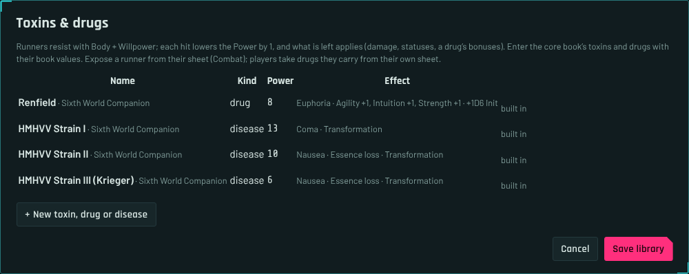
Money, Karma and Edge

- These are in the Between runs bar of the Runners tab.
- Award Karma / Nuyen: give to one runner, several or everyone. Negative amounts take it away. Each award has a reason the runner sees in their history.
- Charge monthly lifestyle: each runner pays their lifestyle (SINner and a suprathyroid gland cost more). Nuyen can go negative.
- Store buys at …%: what players get when they sell gear.
- Edge: only you refresh or award Edge. Use −, + and ↻ next to each runner, or Refresh everyone's Edge. In combat, Award Edge in the attack dialog gives the Edge earned from Attack Rating against Defense Rating.
- History: every Karma and nuyen change in the game.
Backups
ShadowGrid backs everything up once a day, keeping the last 10. Backups on the home page lists them: Back up now, download one, restore one, or restore from a file you downloaded. Restoring puts every game, map, runner and image back to that moment and signs everyone out. The current state is saved first, so a restore can be undone.
Daily backups leave the music out to stay small; the ones you make include it unless you untick Include music. Restoring a backup without music keeps the music already on the server.

Rules reference
Dice
- A 5 or 6 is a hit. Glitch: more than half of the dice show 1. Critical glitch: a glitch with no hits.
- Wild Die: on a 5 or 6 it counts as 3 hits; on a 1, none of the 5s in the roll count.
- An untrained skill rolls the attribute −1. Specialization +2, expertise +3.
Edge Boosts (one per roll)
| Edge | Boost | When |
|---|---|---|
| 1 per die | Reroll the selected dice | After rolling |
| 2 | +1 to one die | After rolling |
| 3 | Buy one automatic hit | After rolling |
| 4 | Reroll every failed die | After rolling |
| 4 | Add your Edge rating to the pool, 6s explode | Before rolling (Push) |
| 1 | +3 Initiative | When rolling initiative |
| 2 | Give an ally 1 Edge · negate 1 Edge of an opponent | Spend Edge… |
| 3 / 4 | Heal 1 box of Stun / of Physical | Spend Edge… |
| 5 | 2s count as glitches on a target's test · special effect | Spend Edge… |
You can hold at most 7 Edge. The GM refreshes and awards it; in combat you can also gain up to 2 per round from Attack Rating against Defense Rating. In combat you spend Edge once per round, and never while Dazed; Edge above your rating is lost when the fight ends.
Combat
- Ranges: Close 0-3 m, Near 4-50 m, Medium 51-250 m, Far 251-500 m, Extreme 500+ m. No Attack Rating at a range means the weapon can't reach.
- Defense Rating = Body + armor (best body armor, plus helmet, shield, implants and qualities).
- Damage after soaking higher than Body knocks the target Prone. Electricity adds Zapped, fire Burning, cold Chilled, chemicals Corrosive.
- Actions per round: 1 Major, 1 Minor + 1 per Initiative Die (max 5). 4 Minor make a Major.
- Cover I to IV adds its level to the Defense Rating and the Defense test. Attacking from cover costs a Minor Action and earns no Edge; from Cover IV it's −2 dice.
- A Prone attacker: −4 dice with melee weapons and bows, +2 Attack Rating with firearms.
- Surprise: Reaction + Intuition (3); failing means no actions in the first round.
- Burning removes Wet and Chilled, and Wet or Chilled puts out Burning.
- Take Aim (Minor): +1 die on the next ranged attack, once per round, up to Willpower; it builds up, and is lost on a turn with no aim and no attack.
- Trip (Minor, melee): −2 base DV; on a hit, Athletics + Agility against the DV or Prone.
- Grapple: unarmed attack; on a hit, Strength + net hits vs Strength restrains. Restrained: −4 on Defense tests, attackers gain 1 Edge, a miss may hit the grappler. Follow-ups (Major): Restrain, Squeeze (Strength ÷ 2 + net hits Stun), Tackle (Prone, Body + net hits Stun), Break free.
- Dispelling: Sorcery + Magic vs the spell's Drain Value × 2; net hits cancel its hits.
- Each spell you sustain: −2 dice on other tests.
Defensive interrupts
| Cost | Interrupt | Effect |
|---|---|---|
| Minor | Block | +Close Combat on the Defense test against a melee attack |
| Minor | Dodge | +Athletics on the Defense test |
| Minor | Hit the Dirt | +2 dice on the Defense test, then Prone |
| Major | Full Defense | +Willpower on every Defense test until the end of the round |
| Minor + Major | Intercept | A melee attack on someone moving through your reach |
Called shots
| Edge | Called shot | Effect |
|---|---|---|
| 0 | Extra damage | −4 dice, +2 DV (a Minor Action) |
| 1 | Shank (blade) | −2 dice, +2 DV (a Minor Action) |
| 5 | Vitals | +3 DV |
| 5 | Disarm | No damage; on a hit the target drops their weapon |
Edge actions in combat
| Edge | Action | Effect |
|---|---|---|
| 1 | Tumble (melee) | Damage above the target's Body knocks them Prone |
| 2 | Knockout Blow (melee) | Damage above the target's Willpower fills their Stun track |
| 2 | Fire from Cover (ranged) | Attack from Cover IV without the −2 dice |
| 1 | Tactical Roll (with Hit the Dirt) | No Prone penalty on your melee attacks this round, nor −2 against Close or Near attacks until the end of the next |
| 2 | Wrest (with a successful Block) | Close Combat + Agility vs the attacker's Strength: equal knocks the weapon away, more takes it |
| 4 | Anticipation (ranged) | The full pool against every target |
Matrix
- Legal actions use Electronics, illegal ones Cracking. Attack Rating = Attack + Sleaze; Defense Rating = Data Processing + Firewall.
- Overwatch Score: +1 per hit the defender rolls against an illegal action. Convergence at 40.
- Matrix damage: −1 die on Matrix actions per 3 boxes on the device. It isn't soaked unless Biofeedback Filter runs. Data Spike: DV = Attack Rating ÷ 2, rounded up.
- IC: condition monitor 2 × host rating, 3D6 initiative; each type has its own defense and effect.
- Noise: −1 per point on Matrix tests; above the Device Rating, no access.
Rigging
- At the controls: Piloting + Reaction. Jumped in: Piloting + Intuition + control rig rating. Gunnery: Engineering + Logic.
- A drone on its own: Sensor + autosoft (Clearsight, Electronic Warfare, Targeting) or Pilot + autosoft (the others); 4D6 initiative.
- Every 3 boxes of damage on a vehicle add 1 to its Handling threshold. Ramming: DV = Body ÷ 2 + 1 per Speed Interval.
- Speed: change it by at most the Acceleration per round; distance = speed at the start ± half the change; −1 die per Speed Interval passed on Handling tests and attacks from the vehicle.
- Weapon mounts: Body ÷ 3; a heavy mount counts two. Fired with Engineering + Logic, or by the drone with Targeting + Sensor.
Toxins and drugs
- Resist with Body + Willpower: each hit lowers the Power by 1, and what's left applies.
- Damage equals the Power left. Statuses last until the effect wears off. Each extra dose adds 1 to the Power; protective gear adds dice.
- A drug's crash applies when it wears off: unresisted damage, statuses, or penalties for a while.
- After approval, a negative quality gives no Karma.
Condition monitors
- Physical: 8 + Body ÷ 2. Stun: 8 + Willpower ÷ 2, rounded up. −1 die per 3 boxes on each track.
- A full Stun track knocks you out, and further Stun overflows into Physical.
- A full Physical track means dying. Overflow boxes equal Body × 2; filling them is death.
Availability
- Character creation: up to Availability 6.
- After approval: legal items up to 2 are always available; otherwise you need a confirmed contact who covers the goods with a Connection higher than the Availability.
- Implant grades: used (Essence ×1.1, price ×0.5, Availability −1), alphaware (×0.8, ×1.2, +1), betaware (×0.7, ×1.5, +2), deltaware (×0.5, ×2.5, +3).
Sixth World Companion
- Metavariants and metasapients cost Karma at creation (shown in the metatype menu). Changing back refunds it.
- Infected cost Karma by expression; non-human bases may pay more and Awakened characters less, as the book says. Lifestyle costs ×1.3.
- A PACK costs its listed price (or its grade price), and every item still has to be available to you.
- Optional rules from the Companion are not used: creation stays on the core-book priority system, and initiative, Edge and contacts work as in the core book.
Advancement after approval
| Karma | For |
|---|---|
| new × 5 | Raise an attribute or an active skill by one |
| 5 | A specialization, or turning it into expertise |
| 3 | A knowledge skill or a new language (+5 per language level) |
| 5 | A spell, ritual or complex form |
| 2 × cost | A positive quality (or buying off a negative one) |
| 10 + grade | Initiation or submersion |
| Force × type | Bond a focus |
| 1 → 2,000¥ | Trade Karma for nuyen (5,000¥ with In Debt) |
Keyboard shortcuts
Everyone on a map
| Scroll | Zoom |
| Right-drag, or Space + drag | Pan |
| F | Fit the whole map |
| I | Toggle the isometric view |
| L | Show or hide the line of sight |
| R | Range bands of the weapon picked under Tactics (players) |
| M | Movement overlay in combat (players; the GM has it in the View menu) |
| 3 | First person (players can also use V) |
| Arrows or WASD, Q/E, Enter | In first person: walk and turn, sidestep, open the door ahead |
| [ | Hide or show the side panel |
| ] | Collapse or open the dice panel |
Players
| Arrow keys | Step one cell |
| C | Centre on your token |
| Double-click | Ping a cell for the table |
GM map editor
| Edit mode | P paint · R rectangle · E erase · S secret · D door · M marker · G room · V select · B light |
| Play mode | P reveal · E hide · D doors · T token · M markers · V select · B light |
| Tab | Cycle "viewing as" through the runners (Play mode) |
| Shift + click a door | Lock or unlock it |
| Ctrl + Z | Undo (Edit mode) |
| Esc | Close the inspector |